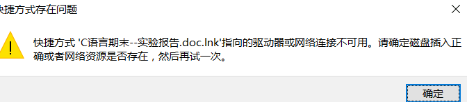
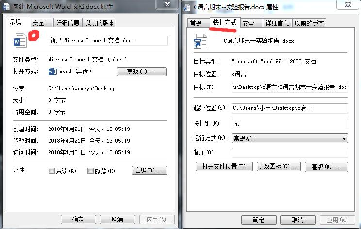
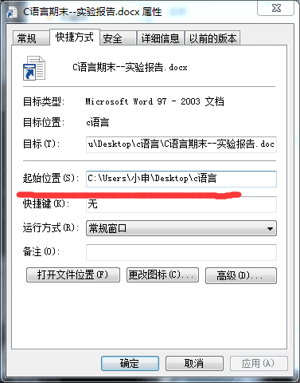
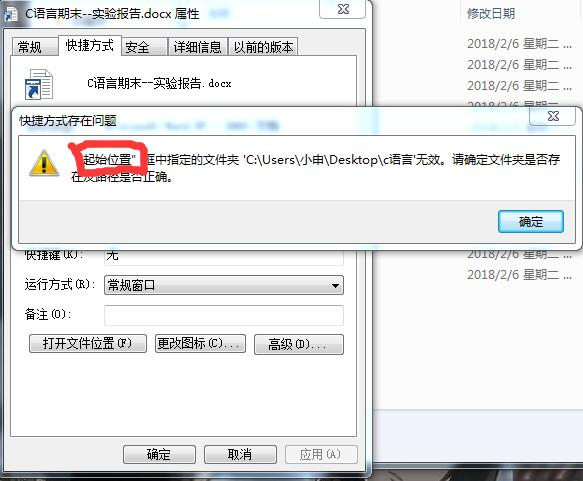
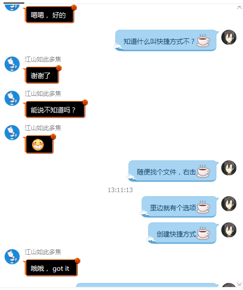

一件怪事
今天在群上瞎转转，碰到有人提问题，虽然本人菜鸟，但还是禁不住想看看到底是咋回事，点开图片一看。
什么啊,原来这么简单的问题，哼哼，看来是时候展现哥真正的技术了。
???!
什么鬼？这是啥情况?真是件怪事了，想了想，估计不拿来在自己电脑上研究下是解决不了问题了，于是叫他把文件给我发过来。
拿到文件后在自己电脑上打开:

还真是这样......
该怎么弄呢？从哪里下手?这个报错提到了快捷方式，什么鬼？这明明是word文件好不好，跟快捷方式又有什么py关系？于是我打开它的文件属性看看，顺便为
了更容易发现它的异常点，我打开了另一个word文件的属性一起对照查看:

很明显，有很大不同，最明显的是，它这个"起始位置"和"目标位置"是个什么鬼？我试着改了改，于是系统再次报错:
 
嗯哼？手动滑稽/略一思考，答案其实已经很明显了:
这个文件根本就不是word文件，它只是一个快捷方式，是一个word文件的
快捷方式。
他朋友应该是个24K纯小白，无意间给这个文件创建了一个快捷方式，然后又将快捷方式当作word文件本身给他传了过来。想到这里，我便知道该怎么回答他了:
最后我还是不放心问了句他知道什么叫快捷方式不?毕竟如果不知道，大概还是有很大可能找不到文件本身。
